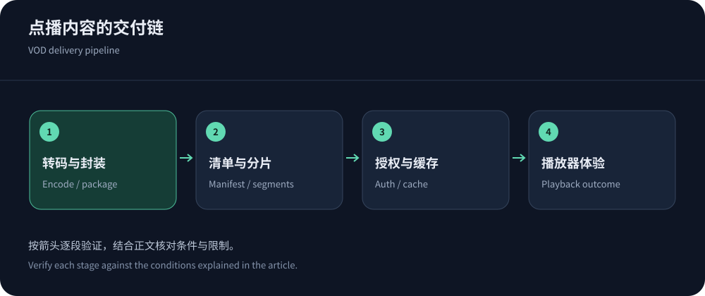
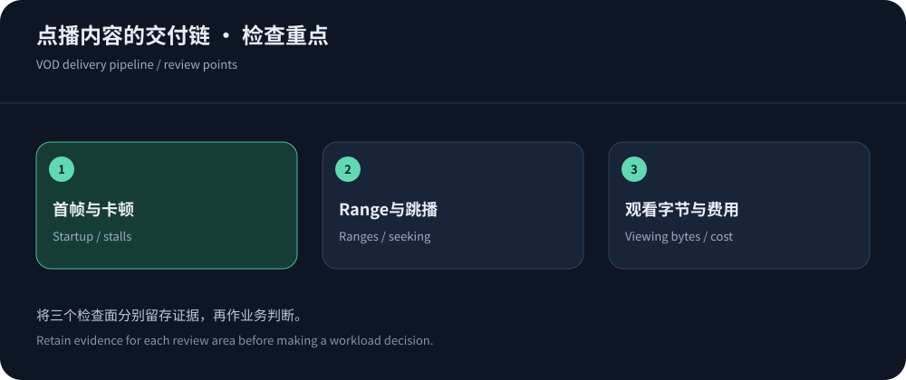

Define playback success before choosing delivery
Judge VOD by startup, sustained viewing and correct seeking, not peak download speed. Manifest loading, rendition selection, decryption and decoding extend beyond CDN control. Define content length, renditions, devices, regions and access rights before choosing delivery or a full media platform.
Sources were checked on 14 October 2026; no startup ranking is claimed. Existing media stacks can evaluate CloudFront delivery or Fastly edge controls, subject to explicit media eligibility and pricing.
Single-file and segmented VOD need different policies
MP4 players may use byte ranges for seeking. Apply HTTP semantics, verifying partial responses, large-object limits and fill behavior rather than equating full-file responses with correct range support.
HLS separates playlists and segments. Immutable versioned segments, manifests, subtitles, keys and authorization endpoints require different reuse and access policies.


Observe the complete playback path
Compare the same assets, player, rendition ladder and devices. Obtain these metrics from actual playback instrumentation rather than network-size claims.
| Stage | Observe | Possible cause |
|---|---|---|
| Click to first frame | Initialization, manifest, authorization, download and decode. | Authorization, encoding or player policy may dominate. |
| Continuous playback | Stall duration, buffer, bitrate switches and completed viewing. | Adequate averages can conceal bursts of loss or slow delivery. |
| Seeking/resume | Ranges/segments, timestamps, subtitles and synchronization. | Bad indexes, missing segments, stale manifests or expired tokens. |
| Release/withdrawal | Release visibility, withdrawal, revoked access and completeness. | Manifest publication before assets or inconsistent versions. |
Cache keys affect cost and access control
Per-viewer tokens can fragment segment caches, but dropping them before authorization can expose protected content. Define authorization separately from object identity according to the product.
CloudFront cache-key guidance helps distinguish forwarding and key dimensions. Test unauthorized, expired and renewed sessions, avoiding token leaks. Controlled URLs do not imply complete DRM or screen-capture prevention.
Budget from delivered bitrate and viewing time
Estimate bytes from watched hours and delivered average bitrate, adding overhead, retries and unused prefetch. A hypothetical 4Mbps for one hour is about 1.8 decimal GB of media, not a vendor result or universal requirement.
Peak viewers determine simultaneous capacity. Include storage, transcoding, packaging, fill, requests and logs, separating popular and long-tail content. Do not sum every rendition as if each viewer downloaded all of them.
Verify media eligibility before comparing prices
Fastly pricing includes package-specific media restrictions; verify a streaming-eligible offering. CloudFront requires accounting for distribution mode, origins and separate media processing. Neither delivery price automatically includes transcoding/player services.
Apple media resources support format validation. Compare an integrated media platform’s reduced integration work with an independent CDN’s control, including operating cost.
Include long-tail content and older devices
Test long videos, subtitles, multiple audio tracks, cold objects, codecs and weaker devices. Retain failed starts and authorization errors, plus recovery after mobile-network changes.
Publish complete renditions before manifests and verify regional availability. Withdrawal and rollback must preserve authorization and version correctness. Separate network, encoding and player responsibilities.


Optimize against successful viewing
Track bytes, startup, stalls and cost per successful viewing by rendition, region and device. Lower quality is not a CDN performance improvement, and unsafe/stale cache hits are not success.
Use billing comparison and the separate live guide. Encoding, player and publishing remain part of successful delivery.